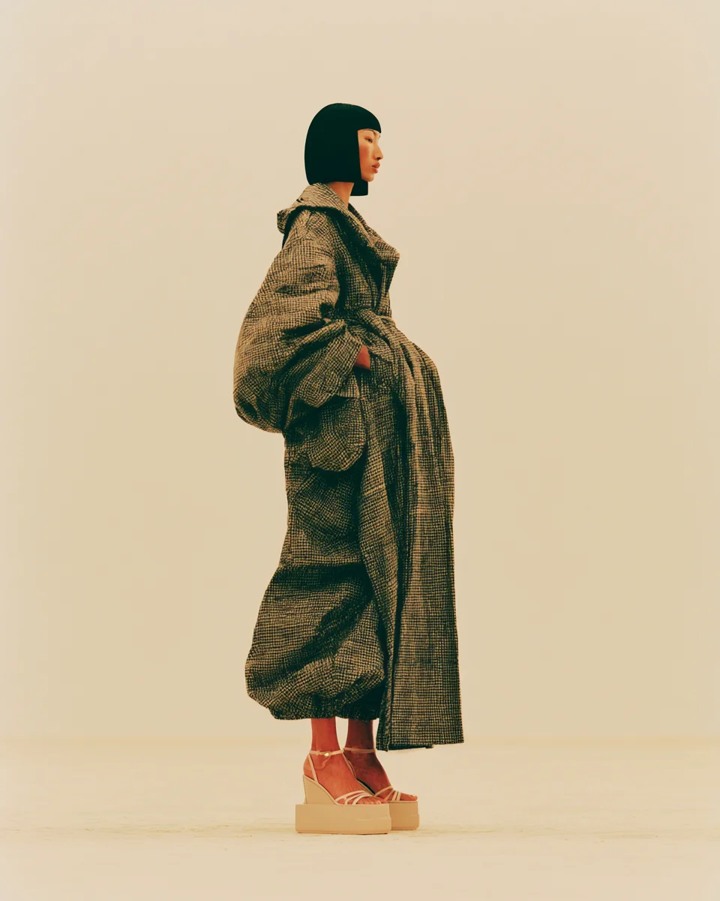

Selected work
Ten projects, newest first. Each one lists my actual role, because “designed by” on a team of nine means very little on its own.
-
-
-
-
-
-
-
-
-

-
Typography
Latin and numerals are set in Inter; Chinese falls through to HarmonyOS Sans SC. Three weights only: 400 body, 500 headings, 600 numeric emphasis.
Inter — Latin
400 · Body copy. The quick brown fox jumps over the lazy dog.
500 · Headings. The quick brown fox jumps over the lazy dog.
600 · 0123456789 · 2026 · 41 · 30
HarmonyOS Sans SC — 中文
400 · 正文字重。设计的意义要在没有视觉层级的情况下依然成立。
500 · 标题字重。设计的意义要在没有视觉层级的情况下依然成立。
700 · 中文没有 600 字重，向上取 Bold。
中英混排：2026 年交付了 41 个项目， 部署在 30 家工厂 —— 数字走 Inter，汉字走 HarmonyOS Sans SC。